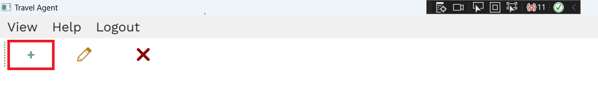

Restaurants Help
Understanding "Restaurants" Page
On this page, you can find all the information related to restaurants. Each restaurant is accompanied by a picture, name, star rating, and location.
By clicking on the blue icon in the bottom right corner, you can search restaurants by specific fields, which are name,address and star rating.

Add
Clicking on the highlighted button will open the restaurant creation window
It is necessary to enter a picture of the restaurant, the name of the restaurant, star rating and the location where the restaurant is located (select from the map).
Edit

After selecting a restaurant, clicking on the highlighted button will open the restaurant editing window
This option enables you to change already existing values set for a restaurant, all of the fields are the same as in the creation window just with already set values. To see field explanations go ti Add
Remove

After selecting a restaurant, clicking on the highlighted button will open the deletion dialog, asking you if you wanted to permanently delete this restaurant